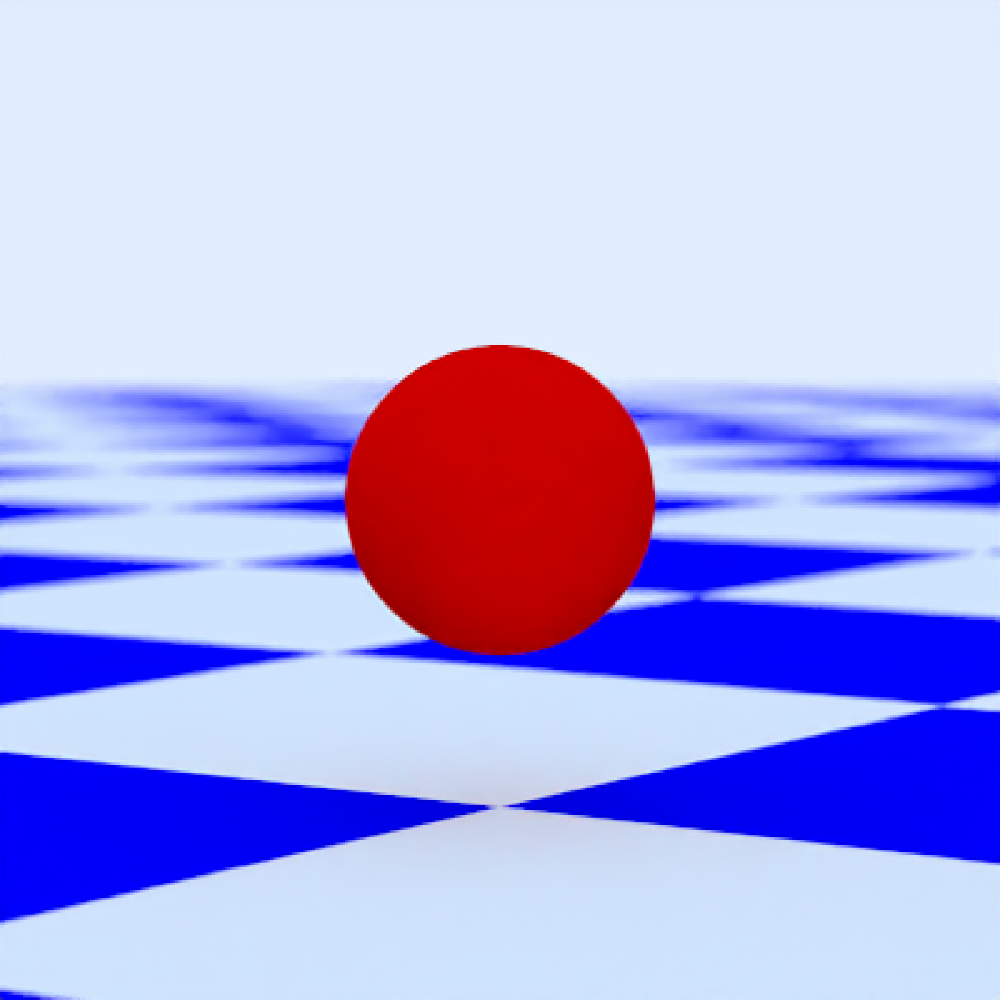
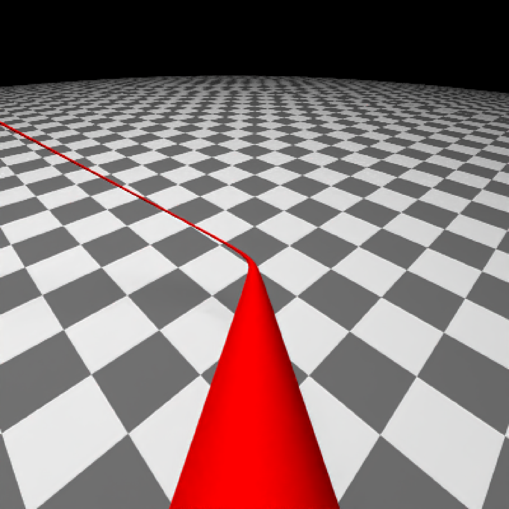
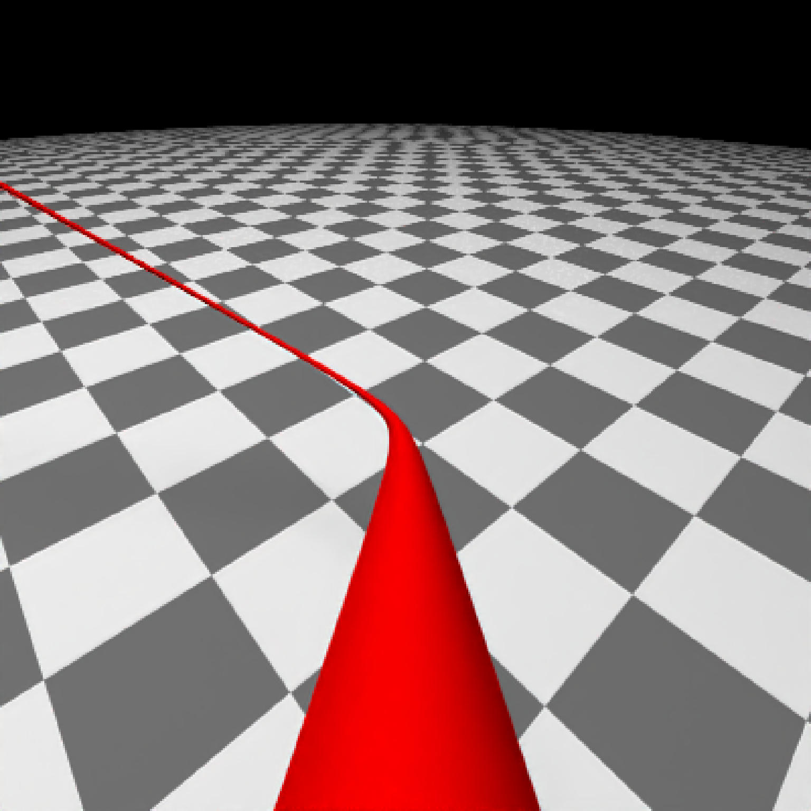
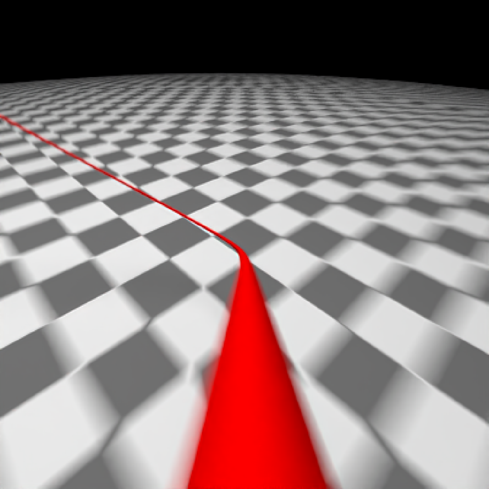
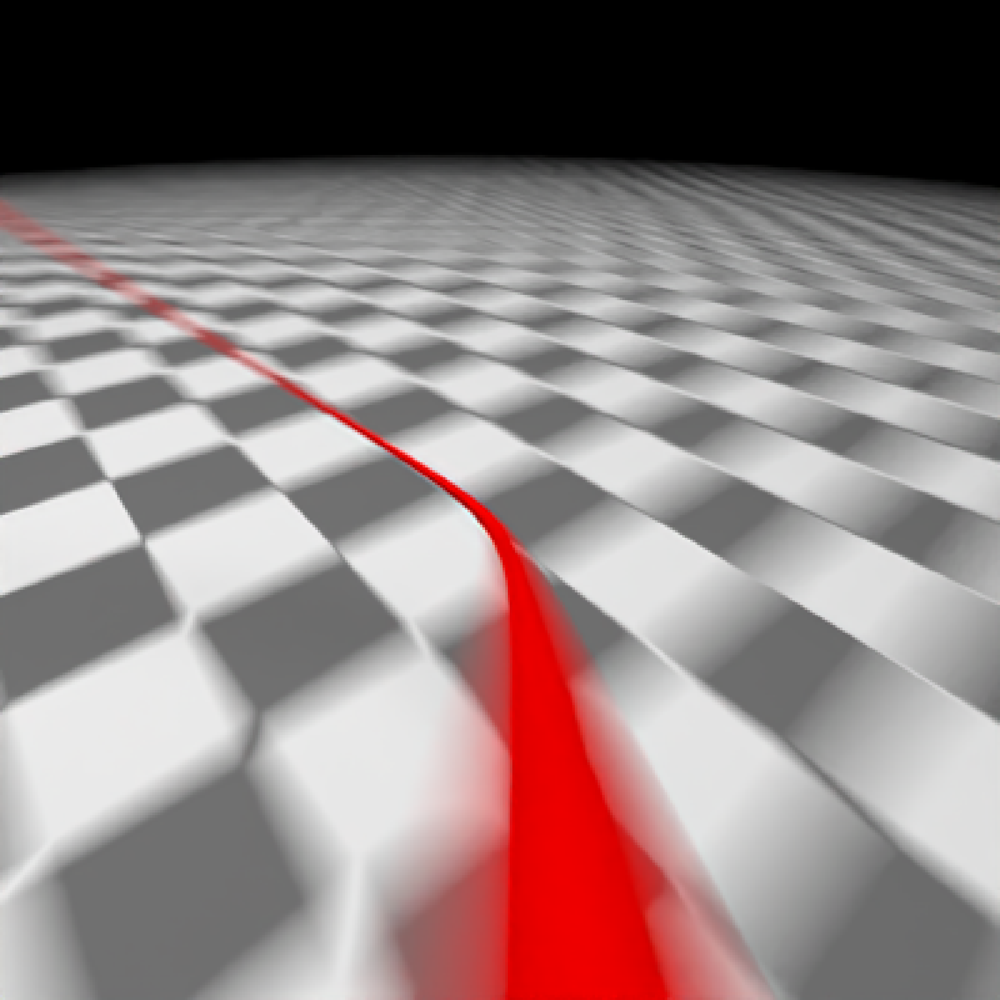
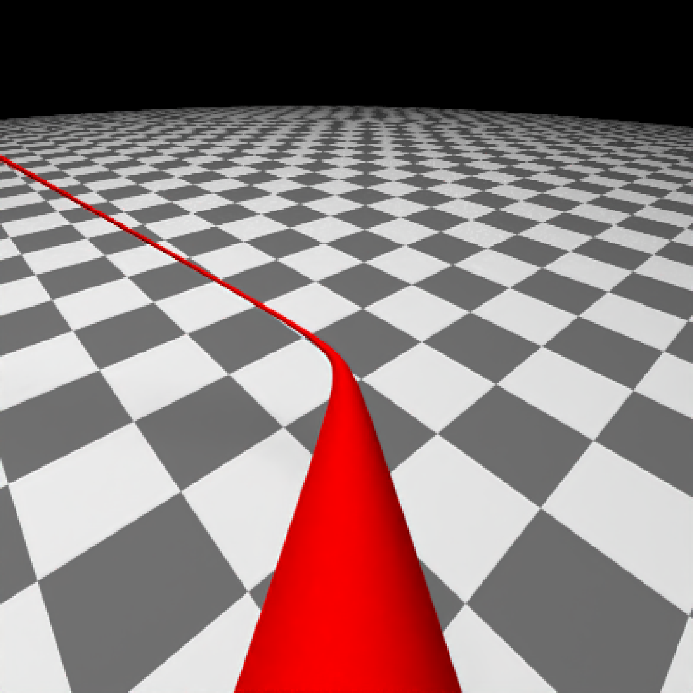

Creates a rayrender camera that can be attached to a `ray_scene` with `add_camera()`.
camera(
lookfrom = c(0, 1, -10),
lookat = c(0, 0, 0),
camera_up = c(0, 1, 0),
fov = 20,
aperture = 0.1,
focal_distance = NULL,
ortho_dimensions = c(1, 1),
motion = NULL,
keyframe_motion_args = list(),
name = "camera",
filename = NA_character_,
camera_description_file = NA,
camera_scale = 1,
iso = 100,
film_size = 22,
shutteropen = 0,
shutterclose = 1,
camera_motion_blur = FALSE,
shutter_speed = 2
)Default `c(0, 1, -10)`. Location of the camera.
Default `c(0, 0, 0)`. Location where the camera is pointed.
Default `c(0, 1, 0)`. Vector indicating the up direction of the camera.
Default `20`. Field of view, in degrees.
Default `0.1`. Aperture of the camera.
Default `NULL`. Focal distance. If `NULL`, this is the distance between `lookfrom` and `lookat`.
Default `c(1, 1)`. Width and height of the orthographic camera when `fov = 0`.
Default `NULL`. Camera motion data frame from `generate_camera_motion()`.
Default `list()`. Named list of additional arguments passed to `generate_camera_motion()` when pressing `M` in interactive preview to preview the saved keyframes. The saved keyframes always supply the camera positions. Defaults are `type = "spline"`, 30 frames per saved keyframe, and `damp_motion = TRUE`. Press Shift-L in the preview window to toggle the current path between open and closed.
Default `"camera"`. Camera name.
Default `NA_character_`. Optional output filename or animation filename pattern.
Default `NA`. Filename of a realistic camera description file.
Default `1`. Amount to scale a realistic camera.
Default `100`. Camera exposure.
Default `22`. Film size in millimeters for realistic cameras.
Default `0`. Time at which the shutter opens.
Default `1`. Time at which the shutter closes.
Default `FALSE`. Whether to blur animated camera movement over the shutter interval.
Default `2`. Frame-relative shutter speed controlling motion blur. A value of `1` samples the full frame-to-frame motion interval, `2` samples one-half, and `4` samples one-quarter. Higher values produce less motion blur. `Inf` disables temporal motion blur.
A `ray_camera` object.
# Static camera attached to the scene, equivalent to passing lookfrom/lookat
# directly to render_scene().
scene = generate_ground(depth = -0.5, material = diffuse(checkercolor = "blue")) |>
add_object(sphere(y = 0.5, radius = 0.5, material = diffuse(color = "red"))) |>
add_camera(camera(
name = "main",
lookfrom = c(7, 1.5, 10),
lookat = c(0, 0.5, 0),
fov = 15,
filename = NA_character_
))
render_scene(scene, samples = 16, parallel = TRUE)

# Shutter speed is frame-relative: higher values sample a smaller fraction
# of camera/object motion without changing exposure.
fast_shutter_camera = camera(
lookfrom = c(7, 1.5, 10),
lookat = c(0, 0.5, 0),
shutter_speed = 4
)
# Animated camera attached to the scene, equivalent to passing camera_motion
# directly to render_animation().
camera_pos = list(c(0, 1, 15), c(5, -5, 5), c(-5, 5, -5), c(0, 1, -15))
camera_motion = generate_camera_motion(
positions = camera_pos,
lookats = camera_pos,
offset_lookat = 1,
fovs = 80,
frames = 12,
type = "bezier"
)
animated_scene = generate_ground(material = diffuse(checkercolor = "grey20"), depth = -10) |>
add_object(sphere(y = 50, radius = 10, material = light(intensity = 30))) |>
add_object(path(camera_pos, y = -0.2, material = diffuse(color = "red"))) |>
add_camera(camera(
name = "flythrough_blur",
motion = camera_motion,
camera_motion_blur = TRUE,
shutter_speed = 2
)) |>
add_camera(camera(
name = "flythrough_no_blur",
motion = camera_motion,
camera_motion_blur = FALSE
)) |>
add_camera(camera(
name = "flythrough_medium_blur",
motion = camera_motion,
camera_motion_blur = FALSE,
shutter_speed = 4
))
#We can render these individual cameras by calling out their specific name in render_scene()
#With no blur
render_scene(
animated_scene,
camera = "flythrough_no_blur",
mode = "animation",
samples = 16,
start_frame = 1,
end_frame = 2,
sample_method = "sobol_blue",
clamp_value = 10,
width = 400,
height = 400
)


#Now, with blur
render_scene(
animated_scene,
camera = "flythrough_blur",
mode = "animation",
samples = 16,
start_frame = 1,
end_frame = 2,
sample_method = "sobol_blue",
clamp_value = 10,
width = 400,
height = 400
)


#Now, with less blur
#' #Now, with blur
render_scene(
animated_scene,
camera = "flythrough_medium_blur",
mode = "animation",
samples = 16,
start_frame = 1,
end_frame = 2,
sample_method = "sobol_blue",
clamp_value = 10,
width = 400,
height = 400
)
